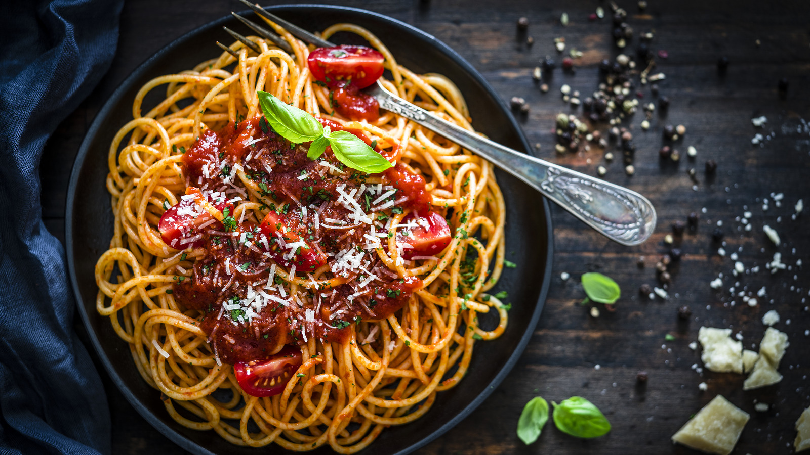

Špageti all'ubriaco
Objavljeno: 14.05.2026.

Ovo jelo živi od kombinacije samo dviju glavnih namirnica koje se savršeno nadopunjuju - tjestenine i vina. Kod "pijanih" špageta tjestenina se kuha izravno u crnom vinu umjesto u vodi, pa upija njegovu boju i aromu te dobiva prepoznatljivu tamnoljubičastu nijansu i blago opori, vinski okus.
Sastojci (za 4 osobe)
- 400 g špageta
- 500 ml crnog vina (suho, srednje punog tijela)
- 500 ml vode
- 3 žlice maslinovog ulja
- 3 češnja češnjaka, nasjeckana
- 1 manja crvena ljuta papričica (opcionalno)
- 50 g parmezana, ribanog
- svježi peršin za posipanje
- sol i papar
Priprema
- U većoj loncu zagrijati vino i vodu te posoliti kao za običnu vodu za tjesteninu.
- Kad tekućina zavrije, dodati špagete i kuhati prema uputama na pakiranju, povremeno promiješati da se tjestenina ne lijepi.
- U široj tavi na maslinovom ulju kratko popržiti češnjak i nasjeckanu ljutu papričicu dok ne postanu mirisni, ali ne i previše zlatni.
- Kuhanu tjesteninu ocijediti, sačuvati malo tekućine za kuhanje, te tjesteninu prebaciti u tavu s češnjakom.
- Dodati nekoliko žlica sačuvane tekućine i dobro promiješati da se stvori laganu, blago kremastu teksturu.
- Maknuti s vatre, umiješati ribani parmezan i poslužiti odmah, posipano svježim peršinom i dodatnim parmezanom.
Za najbolji rezultat preporučuje se koristiti vino koje biste i sami popili uz jelo - kvaliteta vina izravno se osjeti u konačnom okusu tjestenine.
← Povratak na početnu stranicu